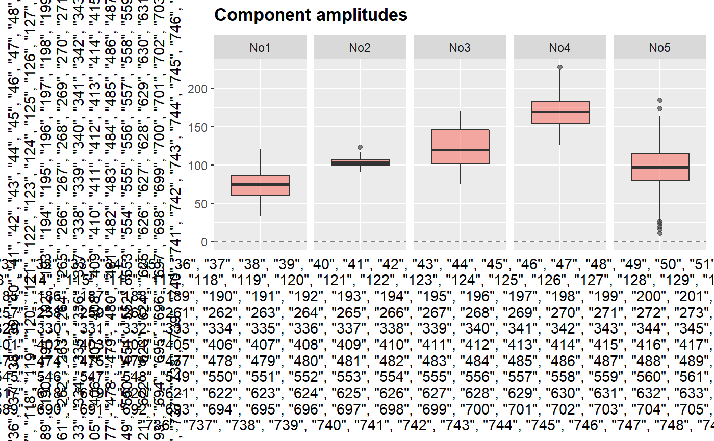

getScores.RdCalculate amplitudes of spectroscopic components (a.k.a. scores) by
matrix multiplication (see section "Detais") and properly label created
hyperSpec object.
getScores(sp, loadings = NULL, xLabel = "Component", yLabel = "Amplitude", names.var = "cNames", scores = NULL)
| sp | Spectroscopic data
(either a |
|---|---|
| loadings | Components' spectra (loadings) as either a matrix or a
|
| xLabel | A label for x axis. Default is "Component". |
| yLabel | A label for y axis. Default is "Amplitude". |
| names.var | A name of variable in |
| scores | A matrix of known/already calculated scores to convert to
|
Amplitudes of the components (i.e., scores), tha corespond to
observations (spectra) in object sp.
Equation of matrix multiplication to calculate scores:
$$scores = sp * loadings * inv(loadings' * loadings)$$
This formula is taken and adapted from [1].
[1] M. Brydegaard et al. IEEE Photonics J 2011:3(3);406-21.
Other component analysis / factorisation related functions in spHelper: infoDim,
plot_spDiff, qplot_infoDim,
qplot_kAmp, qplot_kSp,
qplot_spc, reconstructSp,
sortLoadings, unipeak,
whichOutlier
sc <- getScores(Spectra2, Loadings2) sc#> hyperSpec object #> 150 spectra #> 3 data columns #> 5 data points / spectrum #> wavelength: Component [integer] 1 2 3 4 5 #> data: (150 rows x 3 columns) #> 1. gr: gr [factor] B B ... A #> 2. class: class [factor] N l ... S1 #> 3. spc: Amplitude [matrix5] 66.66467 77.01955 ... 91.59565qplot_scores(sc)#> Warning: hybrid evaluation forced for `row_number`. Please use dplyr::row_number() or library(dplyr) to remove this warning.